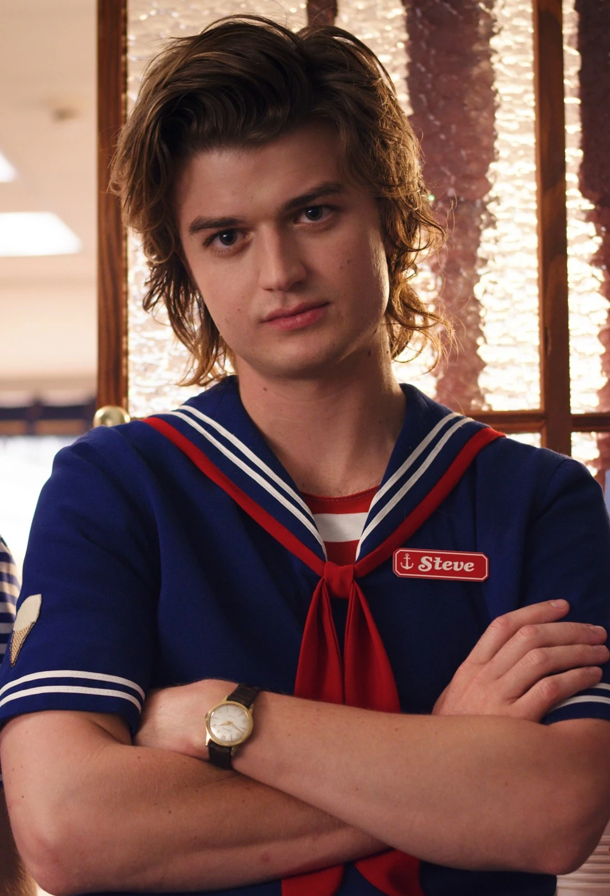

The duffers brothers produced and directed "Stranger Things" a very successful and famous Netflix series. The story takes place in a early 1980’s era where gender norms play a pivotal role in day to day life for the characters on the show. It recounts a story of a missing boy, a frantic mother and three friends looking for an answer. The town of Hawkins is strangely affected by a series of people gone missing and the story revolves around this mystery. The children discovered upside down, a gateway to another dimension built by scientists in a nearby laboratory.These children are tend to be the main protagonist of the story. Upside down is an another dimension, like a purgatory. A stranger horrifying creatures kiddnaps Will, a small boy and takes him to this another dimension so called Upside down. There are a lot of characters and action in this series, which makes it way more exciting and fun to watch. The cast of stranger things is now more famous than ever before and as a result they are appearing in more and more Hollywood projects and series.

Mike Wheeler is a fictional character from the series Stranger Things. Mike Wheeler is the younger brother of Nancy Wheeler and the boyfriend of Eleven. He is best friends with Dustin, Lucas, Will, and Max. When Will Byers mysteriously went missing, Mike and his friends made it their mission to find him. However, while searching for Will, they stumbled upon Eleven instead. Mike soon discovered that she knew something about Will’s disappearance and enlisted her help in finding him. Once Will was found, Mike was happy that he had returned home safely but was devastated by Eleven’s sacrifice to defeat the Demogorgon.
Eleven is a fan-favorite character. She appears unexpectedly one night, having escaped from Hawkins Lab, and befriends the boys. She helps them search for Will as she discovers what her childhood could have been like if she'd lived with a traditional American nuclear family.
Max Mayfield is a comparatively new character introduced in season 2 of Stranger Things. At first, she seems rude, standoffish, and completely uninhibited. Nevertheless, Lucas and Dustin take a liking to her and explain to her the secrets of the Upside Down. Mike isn't too happy with the way everyone thinks she's taking Eleven's place, but he eventually befriends her, too.
A student at Hawkins High School, he was best friends with Tommy Hagan and Carol Perkins and the boyfriend of Nancy Wheeler. When Nancy's best friend, Barbara Holland, disappeared, she became distant and Steve thought she was cheating with Jonathan Byers. Following a few ignorant actions, Steve had a change of heart, told his friends off, and set out to make things right. By coincidence, he ended up heroically saving the day and reconciled with his girlfriend.
Living in small-town Hawkins, with her parents and her siblings her younger brother Mike and her much younger sister, Holly. Nancy was close to Mike when they were kids, but now that she’s in high school they don’t have much in common any more. Profession- high school student. Nancy gets excellent grades and has always been a rules-follower, but that’s starting to change now that she’s caught the eye of Steve Harrington.